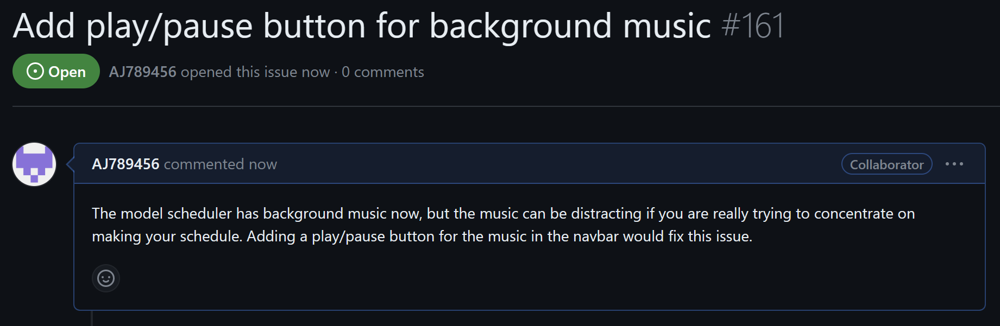
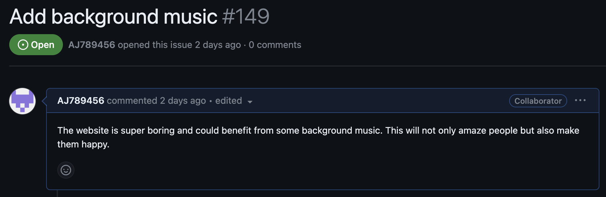

Github Journal Link GANTT Chart Link
Plans for this week:
Last week I added lo-fi background music to the model scheduler. To build on that idea, this week I will attempt to create a custom play/pause button to put in the navbar. This button is useful because if the user wants to stop the music to focus on their schedule, they now can.

Significant Commits:
This week wrote some javascript code to play and pause the music when a button is pressed. Then I created the custom button, using a play/pause icon I found online, and placed it in the navbar. This commit will ensure no one complains about the music being a distraction to them. Commit link: https://github.com/CSAllenISD/2023-ISP-ModelScheduler/commit/ecbb324ab681354bb8c4a5205e174fa85a18d44d
Plans for this week:
This week I will attempt to add music to the model scheduler so that the app is less boring. The model scheduler is currently a boring school "assignment," so adding music will make the website more fun.

Significant Commits:
This week I found some good royalty free music that I was able to use in the model scheduler. I got the music to autoplay when the page is opened without disturbing any of the other elements of the website. This commit that added music to the website made the model scheduler less boring and more fun. Commit link: https://github.com/CSAllenISD/2023-ISP-ModelScheduler/commit/e5e9fa1c7ba054ec4119204fb79aa3cc71e1bcc5
Technical Challenges:
The team reworked the site this week so I had to remake the print button which was somewhat painful. I also found out that the backend team was automatically saving schedules for the demand calculator, so a save button wasn't even necessary.
Scheduling Challenges:
The team is getting stressed about finishing time especially with all the poor feedback we are receiving. But, there is talks about the deadline being moved which is good.
Interpersonal Challenges:
There were no interpersonal challenges this week because everyone was busy working.
Significant Commits:
https://github.com/CSAllenISD/2023-ISP-ModelScheduler/commit/a7fe0107bbc8c76f7d80bc76624276e3eb3a12a7
https://github.com/CSAllenISD/2023-ISP-ModelScheduler/commit/e3515b811c4e7e6dc9be7ec60e42b1628334f597
https://github.com/CSAllenISD/2023-ISP-ModelScheduler/commit/71f81d52b67657fe9fc0f0857fef647e04d8a73d
Technical Challenges:
This week I did some research on making a save button and found out that it was not possible. I also worked and on some cosmetic changes that were pretty simple this week.
Scheduling Challenges:
The team is starting to get stressed about finishing the project because we have a lot of bugs we need to fix. Also, people aren't really happy with the design and other stuff, so we have to fix all that.
Interpersonal Challenges:
There were no interpersonal challenges this week because everyone was busy working, but people are also becoming more friendly which is good.
Significant Commits:
https://github.com/CSAllenISD/2023-ISP-ModelScheduler/commit/9a9eb6b6ccffbe98abe563b00ab18feea2ed4edc
https://github.com/CSAllenISD/2023-ISP-ModelScheduler/commit/74480300b2c0cf648cb6882f08332efbe390003c
https://github.com/CSAllenISD/2023-ISP-ModelScheduler/commit/d36e3ddbd972fd3ef80f24ff8ab012ee6004ef62
Technical Challenges:
Totally unrelated to the ISP, but the Lindenmayer assignment from last week that was due this week was really hard. On the ISP, I spent some time tweaking the look of the print page so that it looks better. But, other than that not too many major technical challenges this week.
Scheduling Challenges:
Lindenmayer took a lot of time to figure out, which took away time from our ISP. Not only that, our computer science teacher made us spend time creating presentations for our ISPs and presenting them in class, which took a lot of time. So, we are under an even bigger time crunch. Not ideal.
Interpersonal Challenges:
People on the team continue to not do any work. And there are some arguments on Discord that have gotten somewhat racist, but I am quite certain the students are just joking around.
Significant Commits:
https://github.com/CSAllenISD/2023-ISP-ModelScheduler/commit/6079b4f137dd0350847f4de2a3bc92ff1ebacef4
https://github.com/CSAllenISD/2023-ISP-ModelScheduler/commit/e0ab4d5153b43e5a3cc5425c0fe73848e06f3258
https://github.com/CSAllenISD/2023-ISP-ModelScheduler/commit/24e88e8751a8d697bc075e129bb6fb8fdafdcec8
Technical Challenges:
Since the FAQ page was pretty much finished at this point, a teammate and I began working on the final page. Setting up the page was relatively easy because the page's design had already been determined. But, making the print button print only what I wanted and not everything on the page took some online research to figure out.
Scheduling Challenges:
This week our computer science teacher assigned us the Lindenmayer assignment which took away from the time we had to work on the ISP. So, this assignment on top of snow days and SQL days really made creating the model scheduler a tough task.
Interpersonal Challenges:
Now that we are really on a time crunch, we need everyone on the team to play their part and help create the model scheduler, but some people just aren't working. A few people are doing most of the work, and although I am not a part of the few people that are doing most of the work, I am doing the tasks I am assigned, like the final page. This issue is stressing people out, like the project manager.
Technical Challenges:
No work was done this week as school was canceled due to inclement weather. Therefore, we did not face any technical challenges.
Scheduling Challenges:
Since school was canceled and everyone on the team was too lazy to get work done, we lost another week in the already limited time we had to finish the product. Finishing the model scheduler on time will prove to be a challenge.
Interpersonal Challenges:
We didn't face many interpersonal challenges this week as no one worked on the ISP. There were no team meetings this week, and Discord remained relatively quiet.
Technical Challenges:
My teammate and I worked a little on the FAQ page this week. We got very little done this week because everyone was focusing more on learning SQL to prepare for the quiz. Because we worked on the FAQ page very little, we did not face any technical challenges.
Scheduling Challenges:
As I said, we mostly spent this week working on learning SQL and not working on the ISP. This will affect our schedule becuse out of the 9 weeks we have, we lost 1. Learning SQL might be helpful to the backend team, but I do not think it will help us, the frontend team, very much. However, SQL was pretty interesting.
Interpersonal Challenges:
We didn't face many interpersonal challeneges this week as most of our team was focusing more on SQL and less on the ISP. There were no team meetings this week, and Discord remained relatively quiet.
Technical Challenges:
I got my assignment for the project this week after having many discussions to decide how our team should go about making the website. I was assigned to both the FAQ page and the summary/print page. I was partnered with a team member to work on these two pages. So, my partner and I just spent some time working on the FAQ page and its CSS file this week.
Scheduling Challenges:
Our team decided that we should have an MVP completed by the end of this week or next week, which confused me. It seems like it will be a challenge to get an MVP done that fast. I want to know what the project manager has in mind for the next 6 weeks if the MVP is to be completed by next week. I also have no idea what the backend team is doing and whether or not they are contributing to the project at all. Also, my teacher wants to spend 3 days teaching the class SQL, so that will definetly affect our schedule.
Interpersonal Challenges:
We faced relatively few interpersonal challenges this week. Everyone seems to be getting along on the Discord. We had a meeting on Discord outside school hours which seemed like a waste of time because only half the team showed up to the meeting, and it didn't seem like we got anything done. I still want to know what exactly the backend team is working on.
Technical Challenges:
This week there were relative few technical challenges because we are still in the process of designing our website and working out roles within the team. We did, however, set up Github and learned how to use the issues feature. As soon as we figure out the design of the site and who is working on what, we will start programming and, as a result, start facing technical challenges.
Scheduling Challenges:
Scheduling is a somewhat large issue; we are about 2 weeks in and we are still solving issues with communication and role assignment. We have not started working on the actually product and the deadline is about 7 weeks away. This week we think we finalized the roles and the MVP, but we are not sure if everyone that wasn't at our meeting agrees, another communication problem.
Interpersonal Challenges:
We have been facing many interpersonal challenges from the lack of communication to the type of communication. Since most of our team members are split up, we are having a hard time knowing what each person is doing. This is also furthered by the fact that not all of us know each other. We tried solving the lack of communication by creating a Discord server, but threats are being made on the server due to the arrogance of some specific team members.
Technical Challenges:
This week we faced no techinal challenges since we are still in the plannning phase of our ISP. Once we start actually creating the site in html we will start to face technical problems. But technically a major challenge that we are still facing is we need to design the site as a team. The design of the site is very important because it dictates the process of building the site.
Scheduling Challenges:
Since our ISP is something that the school needs and not just a computer science assignment, our project will probably have a much earlier deadline than the ISPs that other students are working on. Also, everyone in my team is not in the class period, so we have not communicated with each other much. Therefore, each of our envisioned timelines are different so we must meet so that we can create a common timeline.
Interpersonal Challenges:
Everyone in my team has different computer science class periods, so we have had almost zero communication so far. Some of us have created our own design or started create a website on our own, but none of us have met with one another to discuss how the final project will look like. So, this week we have set that communication platform up. We will have to put together everyone ideas and come up witha design we can all agree on which will probably be harder than we think.
Intial Roles:
Software Devlopment Engineer: The development engineer will a common role in our group. The people with this role will be in charge of programming the site and making our design a reality. I might be okay at this role because I have been in programming for several year now and I am fairly decent at it. But, I do not have much experience with HTML, the language that we will be using for this website. This should not be to big of a problem though because of the vast amount of online resourse I can use to help me program in HTML.
QA Engineer: The quality assurance engineer will check the designs and website as it is being create to ensure it reach a certain standard. They will mak sure that our website isn't released to the school before all bugs and design imperfection are removed. I think this role will suit me because I have good attention to detail a necessary trait for quality assurance engineers. One challenge I will most likely face as a QA engineer is making sure I through test the website to make that ALL bugs are removed. This will be difficult I will have to check everything on the website.
Project Manager: The project manager will be in charge of leading the team and making sure that everyone is communicating with each other. The project will go down hill if communication between team members doesn't happen, even if everyone does there role properly. So the project manager will ensure everything runs smoothly. I personally won't be great for this role because I am not a great leader and I can be strict sometimes, which people usually do not like.
Product Manager: The product manager's role will be somewhat similar to the project manager's role. This person will have to make the all of the development engineers' products work well together and recieve information from the QA engineer on how to improve the product. This role will not be great for me because I do not like to work with integration. I also would not want the pressure of the entire project on me.
Release Engineer: The relaease engineer deals with the deployment of the source code into the program. The relase engineer ensures that the code in the software is ready for distribution. Release engineer are usually found working on complex programs and software. I do not really think we need a release engineer and I do not fully understand their role in our project specifically so I definetly would not choose this role.